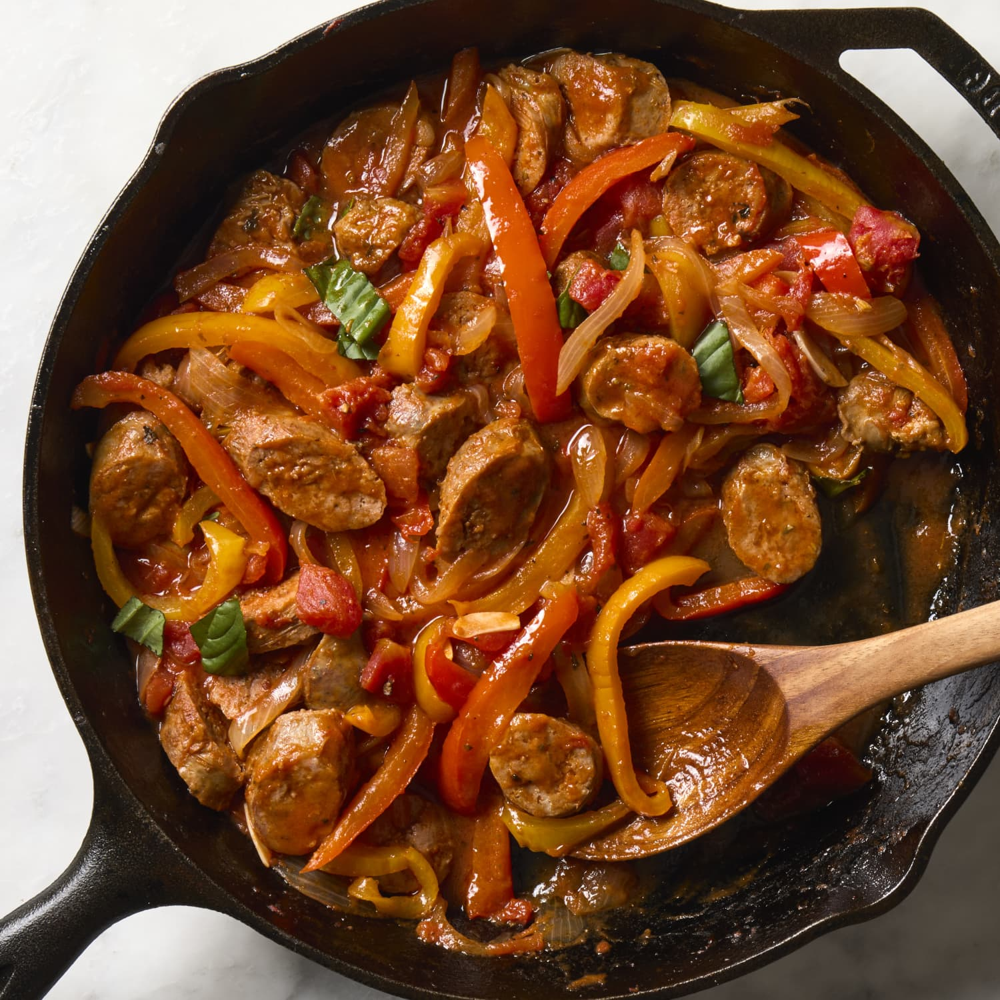

Summary:
Italian Sausage, Peppers, & Onions is probably my favorite thing to eat. It is also an incredibly versatile dish. It can be prepared as a
health-conscious low-carb bent, or in the traditional manner to take full advantage of the savory flavors of the original ingredients. Either
way this dish is really hard to top.
Ingredients
- 2 tablespoons extra virgin olive oil
- 4 Italian sausage links (sweet, hot, or a couple of each)
- 1 large yellow onion, sliced into 1/4-inch half-moons
- 1 green bell pepper, sliced into 3-inch strips
- 1 red bell pepper, sliced into 3-inch strips
- 1 bell pepper of another color (yellow or orange or purple), sliced into 3-inch strips
- Salt, to taste
- 4 garlic cloves, sliced into slivers
- 1/2 cup Marsala or red wine, optional
- 1 (15-ounce) can crushed tomatoes
- 1 tablespoon dried oregano
- 1/2 teaspoon red pepper flakes, optional
Preparation & Cooking Instructions:
-
Heat the olive oil over medium heat in a large pan that has a lid. When the oil is hot, add the sausages and brown them slowly.
If they sizzle and crackle too much, turn the heat down. You want a gentle browning, not a sear. Cook for several minutes, turning
them occasionally so they brown on all sides. When the sausages are browned, remove from the pan and set aside.
-
Increase the heat to high and add the onions and peppers. Toss so they get coated with the oil in the pan and sear them as well as
you can, stirring every so often. Once the onions and peppers soften, sprinkle some salt on them. Once you get some blackening from
a good sear on the onions and peppers, add the garlic, and cook for one more minute.
-
Add the Marsala or red wine if you are using. Scrape the bottom of the pan with a metal spatula or wooden spoon to release all the
browned and blackened bits. Let the wine cook down by half.
-
Add the tomatoes, oregano, and red pepper flakes (if using) and stir well to combine. Add the sausages back in. Bring to a simmer.
then reduce the heat to low. Cover and simmer until the peppers are soft and the sausages are cooked through, about 20 minutes.
-
Serve over polenta, penne pasta, or load it up on a hoagie roll. Sausage and peppers and onions will keep for several days in the fridge.
Return Home